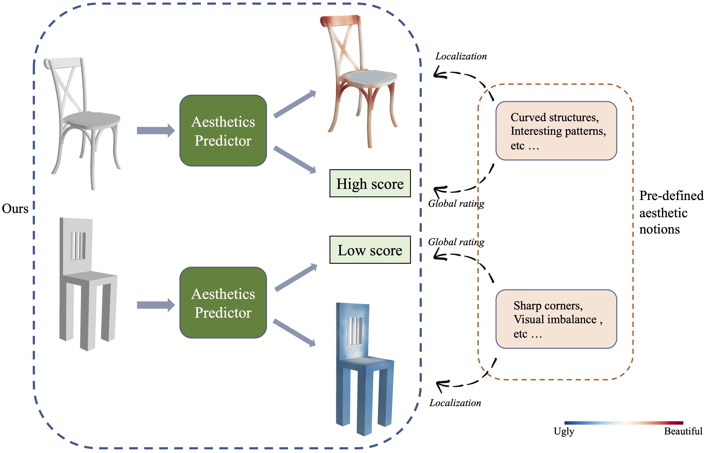
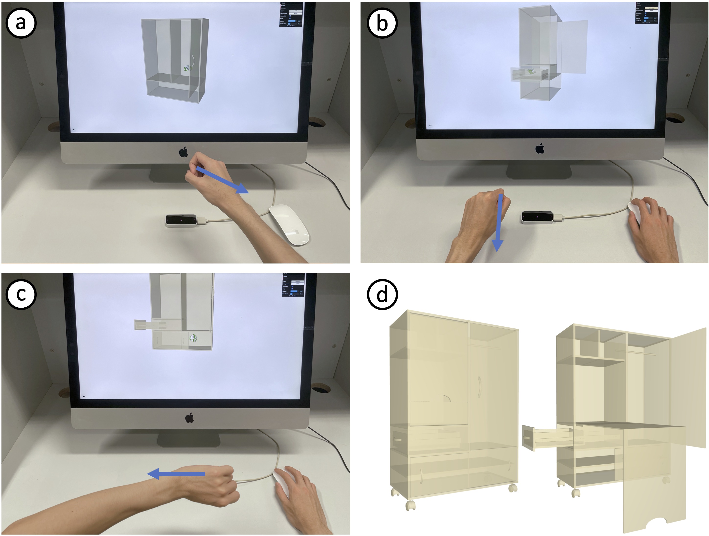

|
Minchan Chen（陈敏婵）
Ph.D. in School of Creative Media, City University of Hong Kong
|
|

|
Learning 3D Shape Aesthetics Globally and Locally
Minchan Chen and Manfred Lau Computer Graphics Forum (Proceedings of Pacific Graphics 2022). Vol. 41, No. 7, 2022 [Project page] [Paper] |
|

|
A Motion-Guided Interface for Modeling 3D Multi-functional Furniture Minchan Chen and Manfred Lau Computer Graphics Forum (Proceedings of Pacific Graphics 2021). Vol. 40, No. 7, 2021 [Project page] [Paper] |
| Research Tuition Scholarship, CityU. | 2022 |
| Postgraduate Studentship, CityU. | 2019-Now |
| Zhang Zongzhi Sci-Tech Scholarship, USTC. | 2018 |
| Outstanding Student Scholarship (Third Class), USTC. | 2016 |